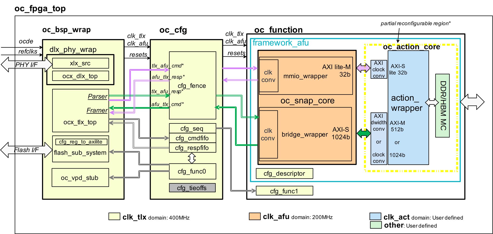

OC-Accel Hardware
Diagram and Clock Domain
Here is a more detailed diagram for OC-Accel Bridge mode.

- oc_bsp_wrap and oc_cfg come from oc-bip ( OpenCAPI3.0 Device Reference design )
- oc_function comes from OC-Accel
hardware/hdl/core. - oc_action can be issued either from a regular or from a "Partial Reconfiguration (PR)" process. In the latter only this region is build and attached to a previously built base. A PR_code ensures they are compatible.
oc_bsp_wrap has DLX, PHY, TLX, VPD (Virtual Product Data) and flash_sub_system. oc_cfg handles the registers defined in OpenCAPI CFG specification.
Under oc_function, framework_afu can be replaced by other reference AFUs like AFP3 or MCP3 in OpenCAPI3.0 Device Reference design. framework_afu contains its cfg_descriptor to describe the basic settings for this AFU.
It has following clock domains:
- clk_tlx: 400MHz (Doesn't change)
- clk_afu: 200MHz (Adjustable)
- clk_act: 200MHz (Adjustable)
- Other: Depending on the requirements of peripheral IPs
The blocks with transitional color means it has the clock converter logic or asynchronous clock interfaces.
A partial reconfiguration region is defined as shown in the dotted box. This area is dynamic area that allows user to change their functional logic and all of the other regions are static in PR (Partial Reconfiguration) Flow.
Click here to get PR details.
AXI4 feature list
Here lists the AXI4 feature list of oc_snap_core:
AXI Lite-M
| Signal | Width |
|---|---|
| ADDR | 32bits |
| DATA | 32bits |
AXI-S
| Signal | Bit Width | Comment |
|---|---|---|
| ADDR (AWADDR/ARADDR) | 64 | Unaligned address supported |
| DATA (WDATA/RDATA) | 1024 | |
| ID (AWID/ARID/BID/RID) | 1 to 5 | 2 to 32 AXI IDs |
| USER (AWUSER/ARUSER) | 9 | Support up to 512 PASID (multi-process contexts) |
| SIZE (AWSIZE/ARSIZE) | 3 | All sized transactions from 1 byte to 128bytes are supported |
| BURST (AWBURST/ARBURST) | 2 | INCR |
| RESP (BRESP/RRESP) | 2 | OKAY or ERROR |
| WSTRB | 128 | All patterns are supported |
Note
Choose less AXI IDs can save the area of snap_core. The AXI ID ports have at least 1 bit. Drive zero if the Action hardware design doesn't use it.
AXI signals cache, lock, qos, region are not supported
Warning
Burst type "FIXED" is coded in snap_core but hasn't been tested.
TLx feature list
TLX to AFU Commands
They are connected to mmio_wrapper.
- pr_mem_read (4B, 8B)
- pr_wr_mem (4B, 8B)
- intrp_rdy
AFU to TLX Commands
They are connected to bridge_wrapper.
- assign_actag
- rd_wnitc (128B, 64B)
- dma_w (128B, 64B)
- dma_pr_w (1B to 32B)
- rd_pr_wnitc (1B to 32B)
- intrp_req